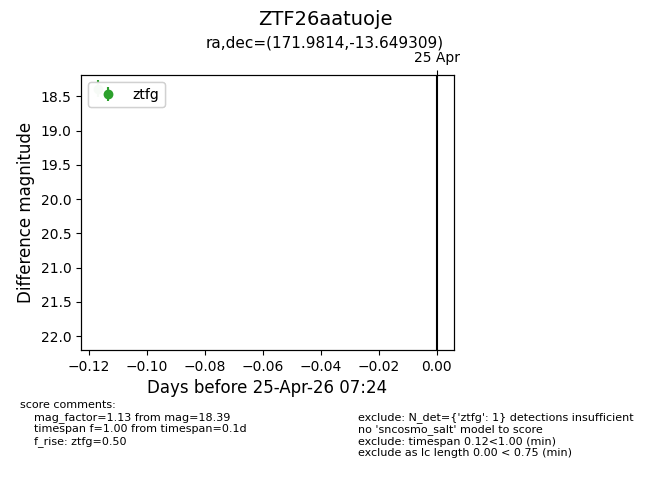
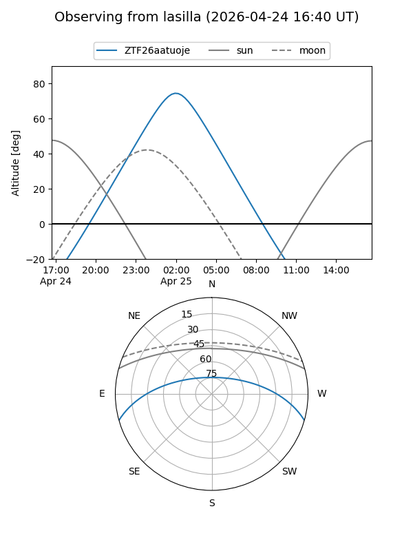
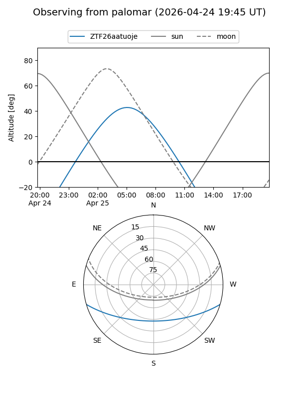

ZTF26aatuoje
Target ZTF26aatuoje at 2026-04-25 07:25
Aliases and brokers:
FINK: link
Lasair: link
ALeRCE: link
alt names
ZTF26aatuoje (ztf,fink_ztf)
Coordinates:
equatorial (ra, dec) = 171.9814,-13.64931
equatorial (HMS+DMS) = 11:27:55.53,-13:38:57.51
galactic (l, b) = (273.9031,+44.46435)
Flags:
Photometry:
last ztfg=18.39
1 ztfg detections
Lightcurve

Visibility


Additional plots